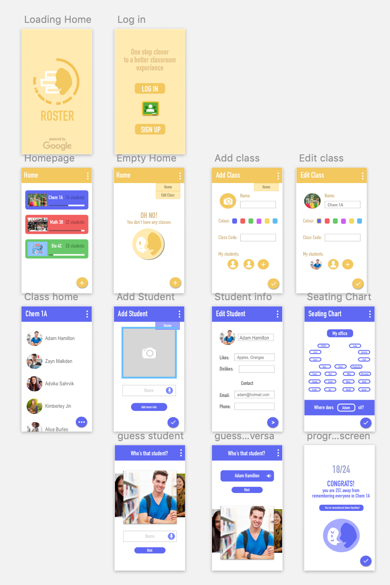

UX Challenges
In order to improve my understanding of user experience, while developing my design skills, I challenged myself to complete a few projects based on various ideas found online and the challenges sent by both WeeklyUX and ProductDesignInterview.
Skills
- Adobe Illustrator
- Adobe Photoshop
- Figma
- InVision
- Sketch
Roster
"At the beginning of each new semester or school year, teachers are faced with the challenge of remembering names for a large number of new students." To solve this problem, I designed "Roster" as an app to quiz educators on their students based on the information they input. This includes the ability to add different class subjects, student pictures and names, notes on their likes, dislikes or hobbies, as well as their seating charts. The design itself was inspired by Google's Classroom App and is intended to be a part of it's ecosystem so teacher's can connect both apps.
